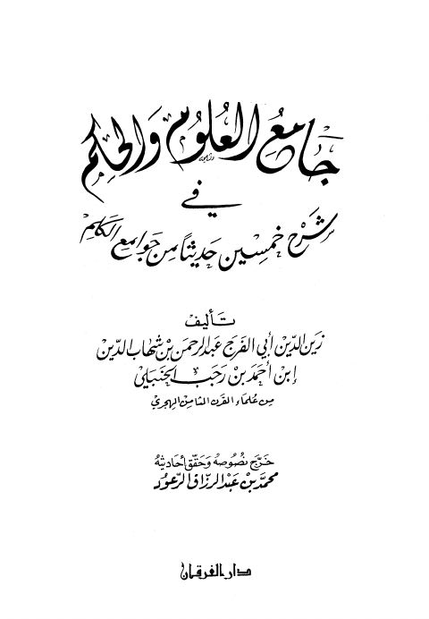

جامع العلوم والحكم في شرح خمسين حديثًا من جوامع الكلم- ت. الرعود
Authors: ابن رجب الحنبلي
Editors: محمد بن عبد الرزاق الرعود
Publishers: دار الفرقان
Download Downloads need an internet connection.
- Published
- 1411هـ 1990م
- Country
- عمان، الأردن
- Edition
- 1
- Volumes
- 1
- Pages
- 752
- Type
- كتاب
- Category
- الحديث وعلومه
- Subcategory
- المسانيد الأخرى والجوامع
Description
**▫️ العنوان: جامع العلوم والحكم في شرح خمسين حديثًا من جوامع الكلم- ت. الرعود** ▪️ المؤلف: #عبد_الرحمن_البغدادي_بن_رجب_الحنبلي ▫️ المحقق: #محمد_بن_عبد_الرزاق_الرعود ▪️ الناشر: #دار_الفرقان ▫️ تاريخ النشر: 1411هـ 1990م ▪️ بلد النشر: عمان، #الأردن ▫️ الطبعة: 1 ▪️ عدد الأجزاء: 1 ▫️ الصفحات: 752 ▪️ نوع الوعاء: #كتاب ▫️ التصنيف الرئيسي: #الحديث_وعلومه ▪️ التصنيف الفرعي: #المسانيد_الأخرى_والجوامع ۪